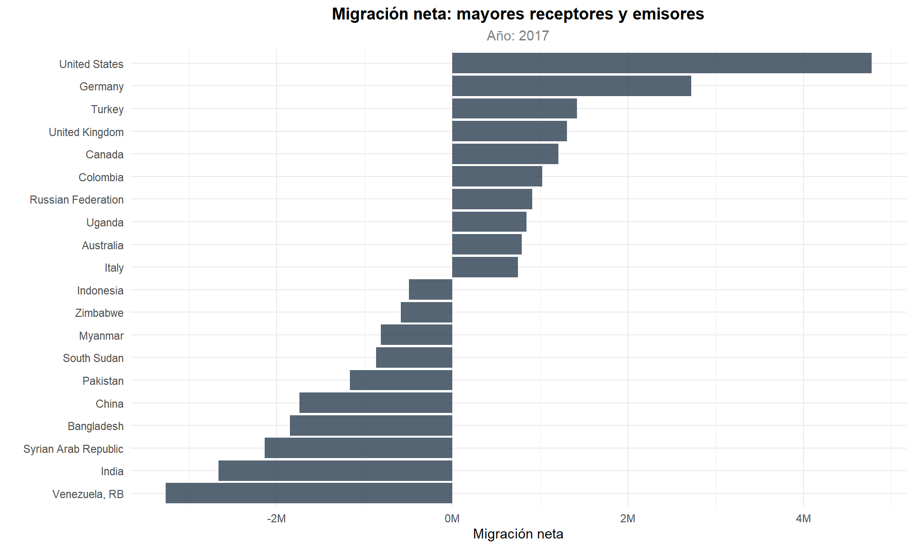
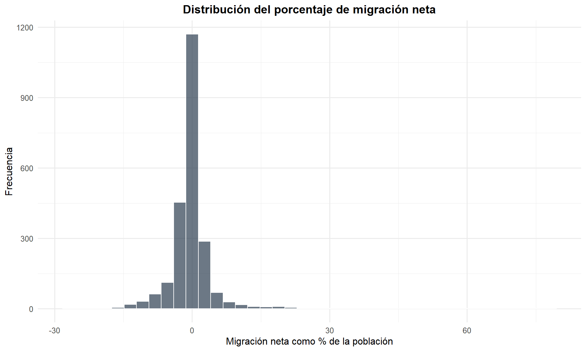

Capítulo 6 Análisis de Migración Neta
El dataset contiene 2313 observaciones con datos de migración neta.
6.1 Estadísticas de Migración
## Min. 1st Qu. Median Mean 3rd Qu. Max.
## -5386986 -80263 -6000 477 27450 88599546.2 Principales Receptores y Emisores
ultimo_anio_mig <- max(df_migracion$year, na.rm = TRUE)
top_inmigracion <- df_migracion %>%
filter(year == ultimo_anio_mig) %>%
arrange(desc(net_migration)) %>%
head(10)
top_emigracion <- df_migracion %>%
filter(year == ultimo_anio_mig) %>%
arrange(net_migration) %>%
head(10)
kable(top_inmigracion %>% select(country, net_migration, migration_perc),
caption = paste("Top 10 países con mayor inmigración neta (año", ultimo_anio_mig, ")"))| country | net_migration | migration_perc |
|---|---|---|
| United States | 4774029 | 0.0146827 |
| Germany | 2719112 | 0.0328963 |
| Turkey | 1419610 | 0.0175040 |
| United Kingdom | 1303250 | 0.0197286 |
| Canada | 1210159 | 0.0331185 |
| Colombia | 1023981 | 0.0209399 |
| Russian Federation | 912279 | 0.0063135 |
| Uganda | 843469 | 0.0204912 |
| Australia | 791229 | 0.0321613 |
| Italy | 744713 | 0.0123018 |
kable(top_emigracion %>% select(country, net_migration, migration_perc),
caption = paste("Top 10 países con mayor emigración neta (año", ultimo_anio_mig, ")"))| country | net_migration | migration_perc |
|---|---|---|
| Venezuela, RB | -3266243 | -0.1111330 |
| India | -2663434 | -0.0019896 |
| Syrian Arab Republic | -2136954 | -0.1252024 |
| Bangladesh | -1847503 | -0.0115707 |
| China | -1741996 | -0.0012565 |
| Pakistan | -1166895 | -0.0056129 |
| South Sudan | -870998 | -0.0798293 |
| Myanmar | -816564 | -0.0152965 |
| Zimbabwe | -584288 | -0.0410408 |
| Indonesia | -494777 | -0.0018696 |
Los principales receptores netos, como Estados Unidos, Alemania y los Emiratos Árabes Unidos, corresponden a economías de alto ingreso que funcionan como polos de atracción laboral y refugio. En contraste, los mayores emisores netos India, Bangladesh y Siria, son conocidos por sus problemas de pobreza o geopoliticos y reflejan dinámicas de expulsión vinculadas a factores económicos (mercados laborales saturados, bajos salarios relativos) y geopolíticos (conflictos armados, inestabilidad institucional). Es relevante señalar que la variable
migration_percrelativiza estos flujos respecto al tamaño poblacional, lo que permite contextualizar el impacto real de la migración en la estructura demográfica de cada país; por ejemplo, un flujo migratorio que resulta marginal para India puede ser transformador para un estado pequeño del Golfo Pérsico.
top_mig_combined <- bind_rows(
top_inmigracion %>% mutate(tipo = "Inmigración"),
top_emigracion %>% mutate(tipo = "Emigración")
)
ggplot(top_mig_combined,
aes(x = reorder(country, net_migration), y = net_migration, fill = tipo)) +
geom_bar(stat = "identity", alpha = 0.8) +
coord_flip() +
scale_y_continuous(labels = function(x) paste0(round(x / 1e6, 1), "M")) +
scale_fill_manual(values = c("Inmigración" = "#27AE60", "Emigración" = "#E74C3C")) +
labs(title = "Migración Neta: Mayores Receptores y Emisores",
subtitle = paste("Año:", ultimo_anio_mig),
x = "", y = "Migración Neta", fill = "") +
theme_minimal(base_size = 11) +
theme(plot.title = element_text(face = "bold", hjust = 0.5),
plot.subtitle = element_text(hjust = 0.5, color = "grey50"),
legend.position = "bottom")
Figure 6.1: Mayores receptores y emisores de migración neta
El gráfico de barras horizontales evidencia la asimetría en la magnitud absoluta de los flujos migratorios. Estados Unidos destaca como el principal receptor neto a nivel global, con un saldo migratorio positivo que supera en varios millones al de cualquier otro país, lo cual se explica por su papel histórico como destino de migración económica y de refugio. Del lado de la emigración, India y Bangladesh presentan los saldos negativos más pronunciados, asociados a la emigración laboral hacia las economías del Golfo Pérsico y el Sudeste Asiático. ## Distribución del Porcentaje de Migración
ggplot(df_migracion %>% filter(!is.na(migration_perc)),
aes(x = migration_perc * 100)) +
geom_histogram(bins = 40, fill = "#8E44AD", alpha = 0.7, color = "white") +
labs(title = "Distribución del Porcentaje de Migración Neta",
x = "Migración Neta como % de la Población", y = "Frecuencia") +
theme_minimal(base_size = 12) +
theme(plot.title = element_text(face = "bold", hjust = 0.5))
Figure 6.2: Distribución del porcentaje de migración neta respecto a la población